14 Modelling
This chapter is inspired by the simple and concise explanation presented in Hadley Wickham and Garrett Grolemund’s R for Data Science book.
A model helps us quantify the relationships between variables in a dataset. By understanding these relationships, we can use these models to better understand the data we have, and to make predictions for unseen data.
A relationship can be quantified by two influences:
- A true pattern
- Random error
The goal of the model is to identify the true patterns from the random error and noise. As an example, let’s say you’re testing the impact of a new drug on cancer treatment. You have half of your participants take the drug, and the other half take placebo. Then, you want to model the impact of your treatment to see if it actually works. In your data though, you’re going to see changes between the groups that are due to your intervention (your drug), but also some changes that are just due to random influences, like individual differences, measurement errors, whatever it may be. The goal of a model is to strip away these random influences and quantify in its purest from, the relationship between your variables of interest.
In reality, you will never perfectly capture a relationship for two reasons:
- We can never truly strip away the noise.
- Perfect relationships don’t really exist.
But that’s not really the point. We will never get things spot on, but models can help us with useful approximations that can inform our decision making and further analysis.
14.1 Types of model
Models types usually fall into “families”. These will be a set of models that are underpinned by some common statistics or philosophy. The most common type of model that is taught at beginner level is the linear model. A linear model assumes a relationship that can be represented in the form y = a + a1x..., where a and a1 represent coefficients (values that will change between models depending on your data).
In this chapter we’re going to look exclusively at linear models. In the next chapter though, we’ll take a different family of models; neural networks.
14.1.1 Linear models
A linear model with the formula y = 8 + (2*x) might look like this:
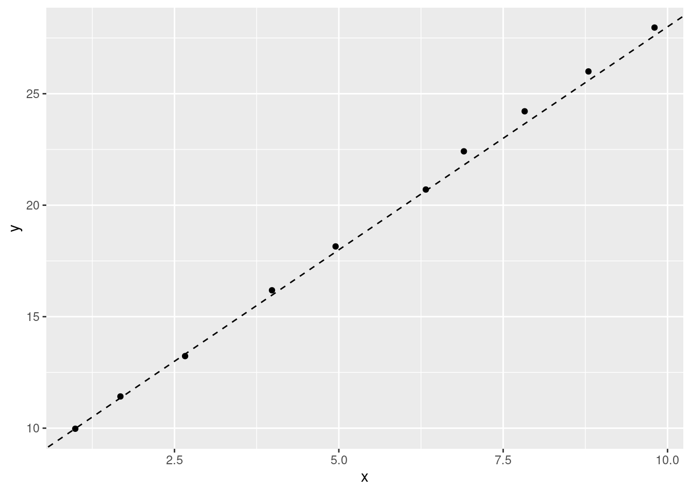
A model with different coefficients (y = 210 - (10*x)) would look different:
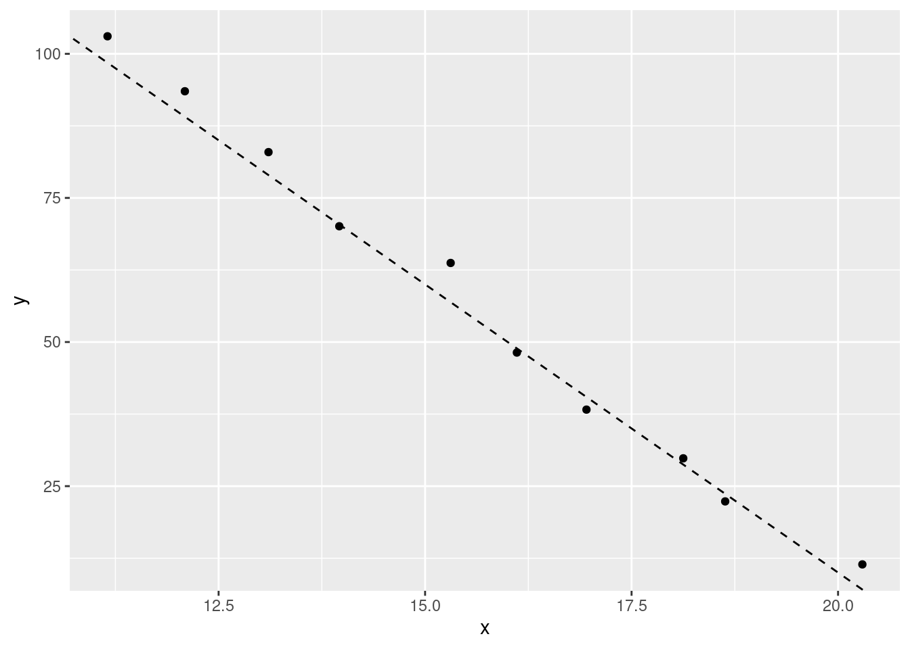
The first coefficient (a), determines where the line starts on the y value (when x is 0). The other coefficient (a1) determines how quickly the line will go up or down (its gradient) as the values of x increase. Although the value of the coefficients will change, a linear model that uses that formula will always be a straight line.
14.1.2 Quadratic
The linear model also extends to quadratic functions. This is often a source of confusion as quadratic models don’t look ‘linear’. The ‘linear’ in linear model actually refers to the coefficients rather than our regression line being linear.
Quadratic models are expressed by the formula y = a + (a1*x) + (a2*x^2). We have the same coefficients as our previous linear model, but now a new one (a2) as well. This extra coefficient allows us to quantify non-linear relationships. For example, a quadratic model with the formula y = 10 - (5) + (2*x^2) might look like this:
Quadratic models allow us to capture relationships between variables that change with different values of x. Real-life examples of relationships like this include:
- population growth
- appreciation of certain commodities
- infection rates
We’ll look at how to identify what type of model is more appropriate for your analysis a bit later.
14.2 Coefficients
In linear modelling, our coefficients are the values that change in our formula to describe our data. In our standard linear model formula (e.g. y = a + a1*x), the two coefficients represent the intercept (a) and the slope (a1). In other words, the a represents the value of y when x is 0 (so where the line would start on the y axis), and a1 defines how quickly that line goes up or down (its gradient). There will be values for those two coefficients that will produce a better model that others. For example, let’s create two models to predict the miles per gallon a car will get based on its weight from the mtcars dataset and compare them.
mtcars %>%
ggplot(aes(x = wt, y = mpg)) +
geom_point() +
geom_abline(intercept = 45, slope = -6.5, linetype = "dashed") +
geom_abline(intercept = 35, slope = -5, linetype = "dashed")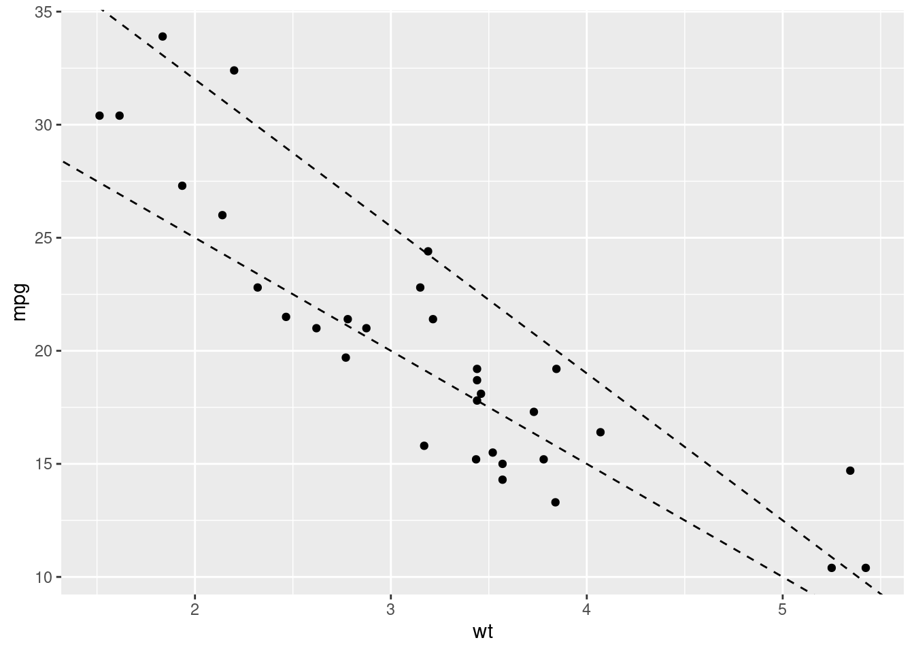
Here we’ve created two models with different coefficient values; one where a = 45 and a1 = -6.5, and other where a = 35 and a1 = -5. Both seem to represent the data pretty well, but how can we know which of the pair of coefficients is the ‘better’ fit? Similarly, we’ve tried just two sets of values here, how can we find the absolute best coefficient values to create the best model?
14.3 Residuals
When we create a model, there will be a difference between the model’s predicted value and each data point. These are the model residuals. The smaller the total residual difference, the more accurate the model is. Let’s visualise our residuals for one of our two mtcars models:
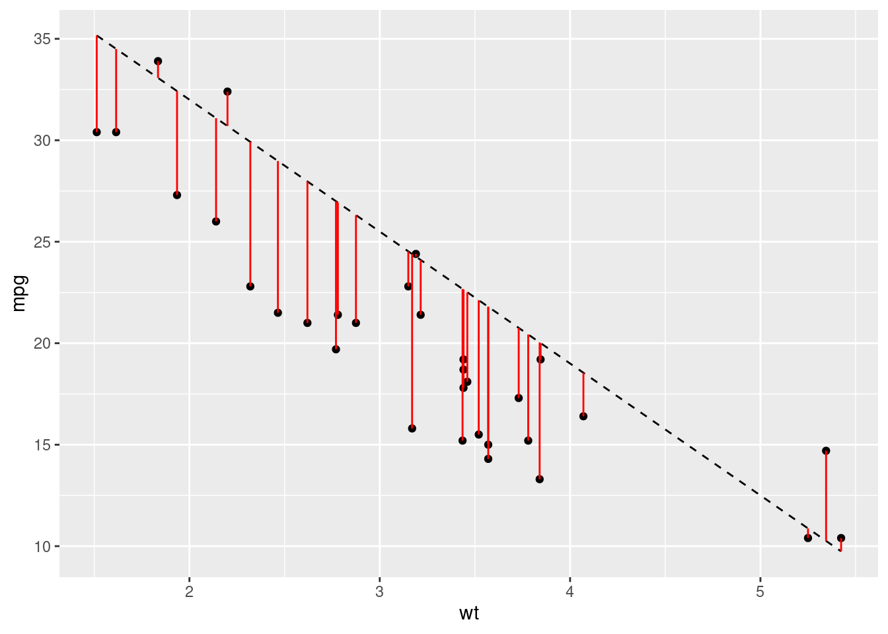
Just from looking at the graph, we can see that most of our predictions are pretty far off. However, we need to boil all of these differences between the predicted and actual values to a single value. This will allow us to easily compare different models. For this we use the root-mean-square-error or RMSE. The calculation for this metric is quite easy - calculate the difference between each data point and the model, square it, average them all and then take the root. Let’s write some functions to produce some models and get some predictions, and then compare the RMSE:
# Create some models with different coefficients
coefficients <- data.frame(
id = 1:10,
a = runif(10, min = 35, max = 40),
a1 = runif(10, min = -6, max = -5)
)
# Plot the models
ggplot(mtcars, aes(x = wt, y = mpg)) +
geom_point() +
geom_abline(data = coefficients,
aes(intercept = a, slope = a1, colour = as.factor(id)), alpha = 0.5) +
scale_colour_discrete(name = "Model")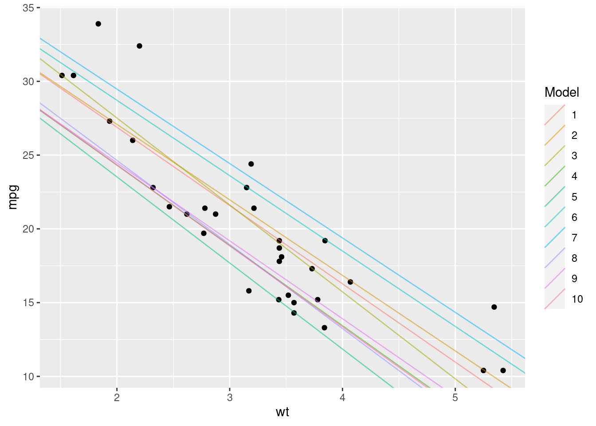
# Create a function to represent our model and give us predictions
# a and a1 represent our coefficients
model <- function(a, a1, wt) {
a + (wt * a1)
}
# Create a function to work out the rmse of our model
rmse <- function(a, a1, wt, mpg) {
# Find the difference between the model value and the actual value
diff <- model(a, a1, wt) - mpg
sqrt(mean(diff ^ 2))
}Now we know how to calculate our RMSE, let’s calculate which of our models has the lowest error:
best_model <- coefficients %>%
# Here we calculate the rmse of each model
dplyr::mutate(rmse = unlist(purrr::map2(.x = a, .y = a1, .f = rmse,
wt = mtcars$wt, mpg = mtcars$mpg))) %>%
dplyr::filter(rmse == min(rmse))
print(best_model)## id a a1 rmse
## 1 8 38.4438 -5.618441 2.973893According to our analysis, model 8 has the lowest residual error. Let’s see what that model looks like:
ggplot(mtcars, aes(x = wt, y = mpg)) +
geom_point() +
geom_abline(data = best_model,
aes(intercept = a, slope = a1, colour = as.factor(id)), alpha = 0.5) +
scale_colour_discrete(name = "Model")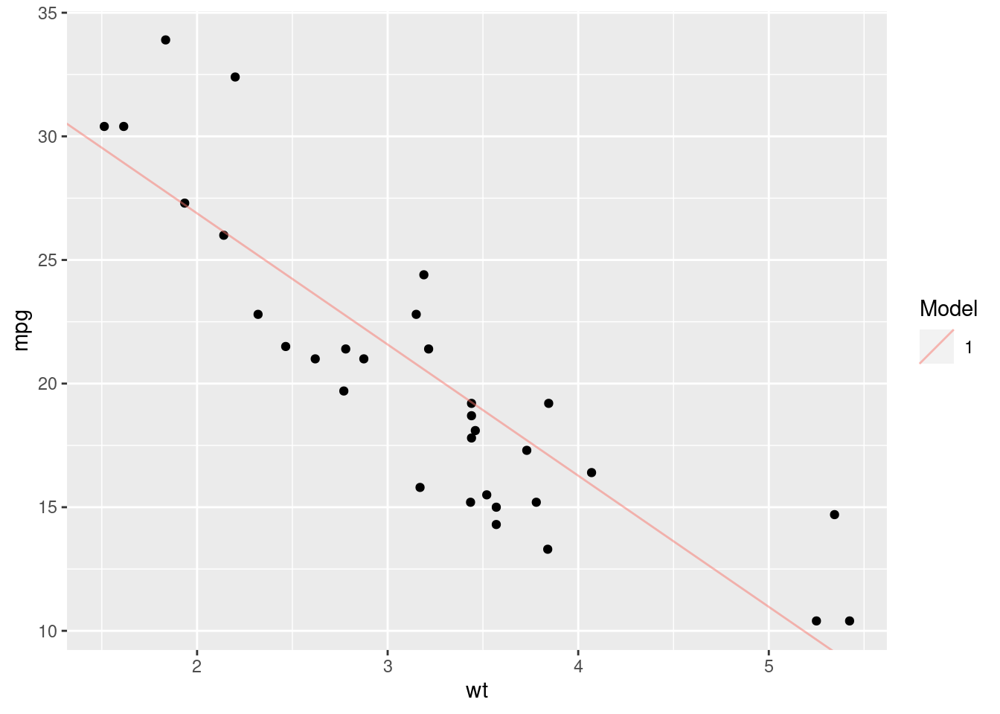
That looks pretty good, but it’s not perfect. We’ve just tried 10 different sets of values and then chosen the best one. This doesn’t mean that we’ve found the absolute best coefficients for our model. To produce the best model possible, we’d need to work out the best values by optimising our RMSE function - finding the values that produce the global minimum RMSE value.
That’s essentially the process that the lm() function in R uses; it automatically finds the best coefficient values by calculating the RMSE for lots of different values and then choosing the best ones.
14.4 lm()
Now that we’ve understood the basics behind a linear model, I can finally reveal that R has a function that will do all of this for us. The lm() function in R just needs the dataset and the formula for our model, and works out the coefficients for us, giving us back a model:
lm_model <- lm(data = mtcars, mpg ~ wt)
# This formula is equivalent to `y = a + (a1*x)`
# where y = mpg and x = wt
lm_model##
## Call:
## lm(formula = mpg ~ wt, data = mtcars)
##
## Coefficients:
## (Intercept) wt
## 37.285 -5.344We can see that the lm() function has calculated coefficient values of 37.285 for the intercept, and -5.344 for the slope. We weren’t too far off with 38.44 and -5.62!
To model quadratic relationships with the lm() function, our syntax is a little different:
##
## Call:
## lm(formula = mpg ~ wt + I(wt^2), data = mtcars)
##
## Coefficients:
## (Intercept) wt I(wt^2)
## 49.931 -13.380 1.171Note:
The I() bit here tells R to treat what we’ve written (wt^2) as one expression, rather than two (wt & 2).
The lm() function returns a linear model object. We’ll take a look at how to evaluate a model in the Evaluating Models section.
14.5 Multiple Predictors
So far we’ve focused on the relationship between just two variables. But in reality, you’ll be using multiple variables in your model to better predict your dependent variable. When we introduce additional variables, we can look for simple or interaction effects.
14.5.1 Simple effects
Simple effects are the additive effects of multiple variables when used to predict a dependent variable. For example, we might want to also introduce the effect of horsepower hp on the miles per gallon of the cars in the mtcars dataset. To do that, we would just add the hp variable to our model:
##
## Call:
## lm(formula = mpg ~ wt + hp, data = mtcars)
##
## Coefficients:
## (Intercept) wt hp
## 37.22727 -3.87783 -0.03177We now get coefficient values for each of the variables we provided. This tells us the impact of weight and horsepower separately on the mpg value. In other words, for every increase of 1 in wt, we see a drop of around 4 in mpg, and for every increase of 1 in hp, we see a drop of around 0.03 in mpg. These drops are consistent regardless of the value of either of the variables.
14.5.2 Interaction effects
Often however, the variables you’re introducing into your model won’t influence your dependent variable in isolation. Instead, the variables will interact with each other. For example, let’s imagine we’re modelling the impact of the type of food and condiment its served with on customer satisfaction. Those two variables are going to related - it makes a big difference if you serve mustard with fish and chips compared to roast beef! It wouldn’t be appropriate therefore to just identify the relationship between the food and the condiments separately on customer satisfaction. Instead we would to understand how customer satisfaction changes as both the food and the condiment changes.
To add interaction effects to our model, we use the * operator:
##
## Call:
## lm(formula = mpg ~ wt * hp, data = mtcars)
##
## Coefficients:
## (Intercept) wt hp wt:hp
## 49.80842 -8.21662 -0.12010 0.02785Now we have 3 coefficients:
- The impact of
wtalone - The impact of
hpalone - The impact of
wt:hptogether
We could also write the formula like this mpg ~ wt + hp + wt:hp.
Now we know how to create models using the lm() function, let’s look at how we can better understand and evaluate them.
14.6 Evaluating Models
Jumping straight into modelling a dataset you don’t understand or creating a model that looks good and then declaring that your work is done can be a dangerous thing. Modelling should be a weapon in your data science arsenal, but it should be handled with care. It’s very easy to make an error and end up with a model that is pointless at best and misleading at worst.
To demonstrate this, let’s produce 4 models for the each of the sub-datasets in the anscombe dataset:
# Create tidy versions of the datasets
tidy_anscombe <- anscombe %>%
tidyr::pivot_longer(everything(),
names_to = c(".value", "dataset"),
names_pattern = "(.)(.)"
)
# Create a model and get the coefficients for each model
models <- purrr::map(1:4, ~tidy_anscombe %>%
dplyr::filter(dataset == .x) %>%
lm(data = ., formula = y ~ x)
)
purrr::map(models, ~.x$coefficients)## [[1]]
## (Intercept) x
## 3.0000909 0.5000909
##
## [[2]]
## (Intercept) x
## 3.000909 0.500000
##
## [[3]]
## (Intercept) x
## 3.0024545 0.4997273
##
## [[4]]
## (Intercept) x
## 3.0017273 0.4999091According to our output, we’ve got 4 very similar models. From that output we might assume that the datasets must be very similar. Let’s plot them now:
tidy_anscombe %>%
ggplot(aes(x = x, y = y)) +
geom_point() +
geom_smooth(method = "lm", formula = y ~ x, se = FALSE) +
facet_wrap(~dataset)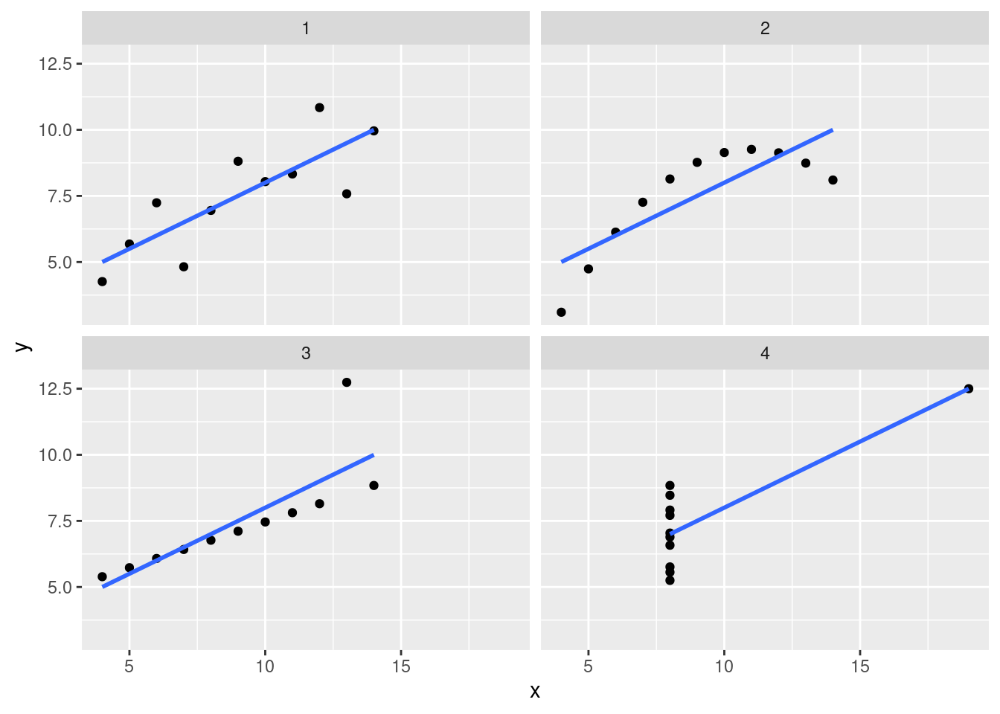
Now that we’ve looked a little deeper, we can clearly see that these models are inappropriate for three of the four datasets (2, 3 and 4). The lesson here is that there are multiple tools at your disposal when analysing data, and overeliance on a particular tool without due care and attention can cause issues.
With that in mind, let’s look at some ways of evaluating the strength of your model.
14.6.1 lm() Output
Now we’ve created a model using the lm() function, let’s understand the output a little bit so we can evaluate our model. When we just print the model, we get the formula we provided, and the coefficients:
##
## Call:
## lm(formula = mpg ~ wt, data = mtcars)
##
## Coefficients:
## (Intercept) wt
## 37.285 -5.344By using the summary() function, we can find out a little more about our model:
##
## Call:
## lm(formula = mpg ~ wt, data = mtcars)
##
## Residuals:
## Min 1Q Median 3Q Max
## -4.5432 -2.3647 -0.1252 1.4096 6.8727
##
## Coefficients:
## Estimate Std. Error t value Pr(>|t|)
## (Intercept) 37.2851 1.8776 19.858 < 2e-16 ***
## wt -5.3445 0.5591 -9.559 1.29e-10 ***
## ---
## Signif. codes: 0 '***' 0.001 '**' 0.01 '*' 0.05 '.' 0.1 ' ' 1
##
## Residual standard error: 3.046 on 30 degrees of freedom
## Multiple R-squared: 0.7528, Adjusted R-squared: 0.7446
## F-statistic: 91.38 on 1 and 30 DF, p-value: 1.294e-10There’s a lot to unpack here.
Residuals
We’ve now got a residuals section that shows us the range and quartiles of our residuals. This can be helpful to understand whether your model is consistently over or underestimating
Coefficients
We’ve also now got an expanded view of our coefficients. We’ve still got our estimates, but now we’ve also got standard error, t value and then P value entries.
Standard error
The standard error represents the average difference between the estimated value and the actual value. So for example, our coefficient estimate for wt is roughly -5, meaning that we lose 5 miles per gallon for every increase of 1000 lbs (1 wt unit). Our error value of roughly 0.5 tells us that actually, on average, it’s between -5.5 and -4.5. If our standard error was 2, then that would suggest that on average, an increase in 1 wt unit would correspond with a change of between -7 and -3. A lower standard error value usually represents a more accurate model.
t value
The t value is then the estimate divided by its error. We can use this value to estimate the strength of our relationship between the two variables; a strong relationship (i.e. a high coefficient value) and a low error will produce a high t value. Conversely, a smaller coefficient value representing a weaker relationship and then a large error value suggesting that we’re struggling to accurately predict the value of y will have a low t value.
P value
P values are something of a hot topic in statistics so we won’t discuss them in length here. Instead, we’ll focus on exactly what a P value is - not whether it’s a good idea to use one.
A t value is converted to a P value via a T distribution table based on the degrees of freedom (don’t worry about what this is). P values represent how often we would see this same t value if the two variables had absolutely no relationship at all. The larger the t value is (i.e. the stronger the relationship appears to be), the less likely it is that we would observe this relationship purely by chance. The typically accepted value for considering a relationship to not be the result of chance is 0.05 (i.e. we’d only see these results if there was truly no relationship 1 in 20 times), but that’s more an academic rule of thumb. In reality, you shouldn’t really rely too heavily on the p value to tell you the strength of your model.
Residual standard error
This is the residual standard error of the entire model (as opposed to a single variable). The logic is the same though; it’s the average difference between our model’s estimate and the actual value. This is almost equivalent to the Residual Mean Standard Error we calculated before, but it’s calculated slightly differently.
Multiple & Adjusted R-squared
The R-squared value represents how much of the variance in y can be explained by your model. So we’ve got a Multiple R-Squared value of around 0.7, meaning that 70% of the variance we see in the mpg value can be explained by the effect of wt. The larger the value the better. But if you ever get an R-Squared value of 1, you’ve definitely done something wrong.
If you have one variable, then the Multiple R-Squared value is fine to use. If you have more than 1 though, the Adjusted R-Squared value will account for the fact that you’re going to explain more variance simply by adding more variables, and so tries to correct for that.
F Statistic
The F statistic is a global test for whether any of your coefficients are non-zero (if you have a relationship between any of your variables and the dependent variable). The reason we have this global test is that as you increase the number of variables in our model, you’re increasing the likelihood that at least 1 will have a significant relationship with your dependent variable. We learned before that our rough estimate for considering a ‘true’ relationship is that we would only observe the t value of that size once every 20 times if there was no relationship. Well then if you include 20 variables, you’ll get one significant predictor on average each time. The F value takes this into account and then tells you whether you have at least 1 significant predictor given the number of variables that you tried.
14.6.2 Residuals
As we’ve learnt previously, the goal of our model is to reduce the total residual difference between our model and the data. But blindly reducing this value without then inspecting the result can be dangerous. When you’re using the lm() function, your residuals should be normally distributed. That means that (essentially) your model should be overestimating as much as it’s underestimating for every value of y.
Let’s take a look at the residual values for our mtcars model:
mt_residuals <- mtcars %>%
modelr::add_residuals(model = lm(data = mtcars, formula = mpg ~ wt + hp))
mt_residuals %>%
ggplot(aes(x = resid)) +
geom_freqpoly(binwidth = 0.5)
Things kind of look okay, but it’s tough to know for sure because have so few estimates. Let’s take a look at how our residuals change for different mpg values:

Here we can see what looks like random noise. This is good because it means that our model isn’t performing better for some values than for others. If it is, that means we have a systematic bias in our model.
Alternatively, let’s compare this plot with a plot of one of the anscombe datasets:
tidy_anscombe %>%
dplyr::filter(dataset == 2) %>%
modelr::add_residuals(model = models[[2]]) %>%
ggplot(aes(x = x, y = resid)) +
geom_point()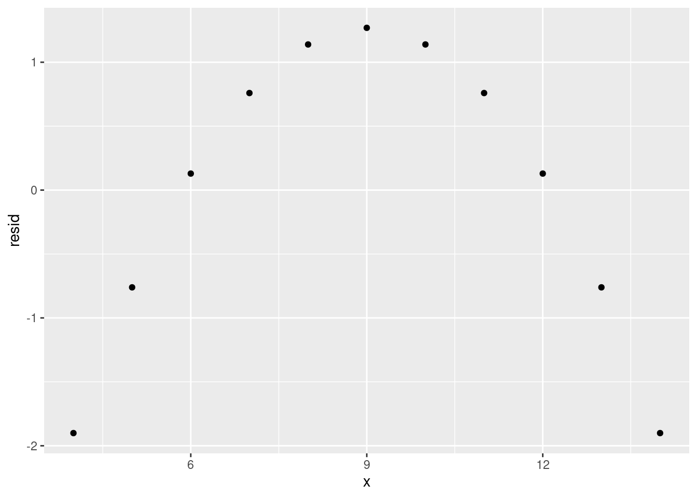
Here we can see a very clear trend, meaning that our model is not representing the data very well. Instead, it is overestimating and underestimating in a predictable pattern for different values of x. If you see a residual plot like this, something’s gone wrong.
14.6.3 Overfitting
The goal of a model is usually to make a prediction. To be able to make those predictions, we train the model on observed data (i.e. data where we have the values of the independent and dependent variables). However, if we train the model to represent the observed data too well, the model may not perform well on new datasets. We call this overfitting - our model represents the test data too well and does not generalise well.
Let’s look at an example of overfitting. We’ll split the mtcars dataset into two; a training set and a test set. We’re purposely going to split our data badly here but in reality you’d split the dataset randomly.
Then we’ll train our model on the test set and evaluate the residuals:
# This is the same as wt + wt^2 + wt^3 + wt^4 + ... wt^7
overfit_model <- lm(data = train_mtcars, formula = mpg ~ poly(wt, 7))
train_mtcars %>%
modelr::add_predictions(overfit_model) %>%
ggplot(aes(y = mpg, x = wt)) +
geom_point() +
geom_line(aes(y = pred))
train_mtcars %>%
modelr::add_residuals(overfit_model) %>%
ggplot(aes(x = wt, y = resid)) +
geom_hline(yintercept = 0) +
geom_point()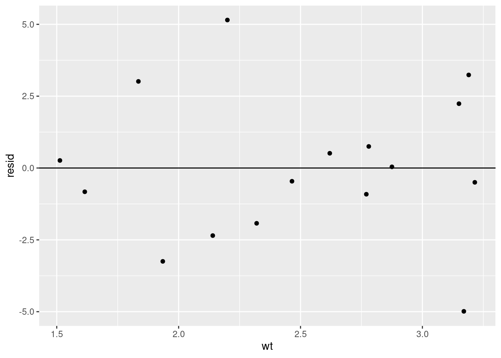
Things seem to look fine. Our residuals look pretty random and we seem to be representing the data we have well. When we then apply the model to our test dataset (data the model wasn’t trained on) however…
test_mtcars %>%
modelr::add_predictions(overfit_model) %>%
ggplot(aes(y = mpg, x = wt)) +
geom_point() +
geom_line(aes(y = pred))
That’s clearly not right at all. We’ve got predictions that are nowhere near the actual values.
What’s happened is our model has overfit the training data, representing noise and randomness as a true relationship between the variables. When we then apply the model to new data then, where that noise is different, it performs terribly.
Let’s compare this with a simpler model that doesn’t overfit.
nonoverfit_model <- lm(data = train_mtcars, formula = mpg ~ wt)
test_mtcars %>%
modelr::add_predictions(nonoverfit_model) %>%
ggplot(aes(y = mpg, x = wt)) +
geom_point() +
geom_line(aes(y = pred))Much better. The model still isn’t perfect, but it’s much better than our previous example even though it’s much less complex.
14.6.3.1 Avoiding overfitting
Unforunately, there’s no single way to really avoid overfitting. There are things that can be done to mitigate it though:
- Prefer simplicity
- Where possible, a simpler model will likely be preferable to a more complex model
- Split your test and training data appropriately
- In our example, we purposely split the training data badly but in practice you should aim to represent your data equally well in both your training and test datasets.
- Properly evaluate your models
- By properly evaluating and understanding our model, you should be able to identify and mitigate the effects of overfitting
14.7 Video Game Sales Model
Now we’ve created some example models, let’s apply what we’ve learned to our video games dataset.
Let’s model the effect of year and genre on video game sales between 1980 and 2000:
vg_sales_to_model <- tidy_vg_sales %>%
dplyr::filter(Year >= 1980 & Year <= 2000,
Country == "Global") %>%
dplyr::group_by(Genre, Year) %>%
dplyr::summarise(Total_Sales = sum(Sales), .groups = "drop") %>%
dplyr::mutate(Genre = forcats::fct_lump_n(Genre, n = 7, w = Total_Sales)) %>%
dplyr::filter(Genre != "Other") %>%
dplyr::group_by(Genre, Year) %>%
dplyr::summarise(Total_Sales = sum(Total_Sales), .groups = "drop")
vg_sales_to_model %>%
ggplot(aes(x = Year, y = Total_Sales)) +
geom_line() +
facet_wrap(~Genre)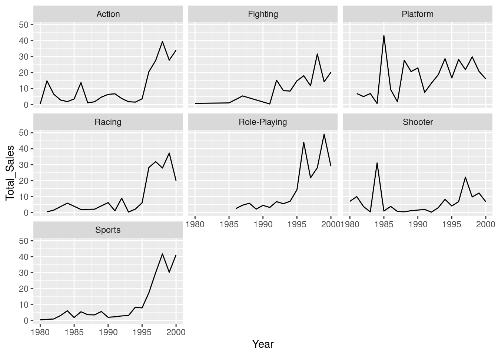
There does seem to be a relationship - we’re seeing more sales as the years increase - but it might not be equal for the different genres. For this reason, let’s create a model that looks at the interaction effects between genre and year:
Let’s plot a model for each genre model:
vg_sales_to_model %>%
ggplot(aes(x = Year, y = Total_Sales, colour = Genre)) +
geom_point() +
# This will produce the same model as we did with the `lm()` model
geom_smooth(formula = y ~ x, method = "lm") +
scale_y_continuous(limits = c(0, NA)) +
facet_wrap(~Genre)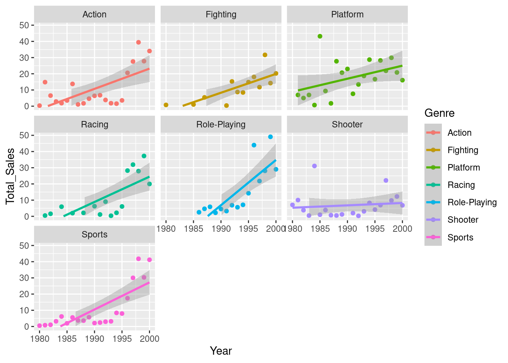
From our plot, it looks as though we’re only seeing a different effect of year in a couple of the genres - the role-playing genre seems to have grown at a faster rate than the others, with shooters growing at a slower rate. Let’s compare this to our model summary:
##
## Call:
## lm(formula = Total_Sales ~ Year * Genre, data = vg_sales_to_model)
##
## Residuals:
## Min 1Q Median 3Q Max
## -14.139 -5.391 -1.586 5.334 30.230
##
## Coefficients:
## Estimate Std. Error t value Pr(>|t|)
## (Intercept) -2.476e+03 6.403e+02 -3.867 0.000186 ***
## Year 1.249e+00 3.217e-01 3.883 0.000175 ***
## GenreFighting 1.700e+02 1.084e+03 0.157 0.875656
## GenrePlatform 8.928e+02 9.407e+02 0.949 0.344602
## GenreRacing -6.248e+02 9.957e+02 -0.627 0.531648
## GenreRole-Playing -3.077e+03 1.241e+03 -2.479 0.014680 *
## GenreShooter 2.191e+03 9.055e+02 2.419 0.017162 *
## GenreSports -8.449e+02 9.055e+02 -0.933 0.352778
## Year:GenreFighting -8.664e-02 5.443e-01 -0.159 0.873805
## Year:GenrePlatform -4.455e-01 4.727e-01 -0.943 0.347919
## Year:GenreRacing 3.130e-01 5.001e-01 0.626 0.532647
## Year:GenreRole-Playing 1.544e+00 6.231e-01 2.478 0.014693 *
## Year:GenreShooter -1.103e+00 4.550e-01 -2.424 0.016969 *
## Year:GenreSports 4.245e-01 4.550e-01 0.933 0.352896
## ---
## Signif. codes: 0 '***' 0.001 '**' 0.01 '*' 0.05 '.' 0.1 ' ' 1
##
## Residual standard error: 8.928 on 112 degrees of freedom
## Multiple R-squared: 0.5087, Adjusted R-squared: 0.4517
## F-statistic: 8.922 on 13 and 112 DF, p-value: 2.696e-12This seems to support what we estimated from the plots - there’s definitely a positive effect of year (we’re selling more games as the years go by), and we can see that this effect is different for the Role-Playing and Shooter groups. If we look at the estimate values, we can see that the Shooter genre has a negative value and the Role-Playing genre is positive. This also backs up what we estimated from the plots - the popularity of shooter games has grown more slowly than other genres, whilst the popularity of role-playing games has increased more quickly.
It’s worth noting that when you use a character or factor variable like we have here (Genre), the first level of that variable is used as the base for the model. So we can see that there’s no GenreAction entry in our summary. This is because R has treated that genre as the base (i.e the Intercept value) and then compared the effect of the other levels against that base. So when we say that the popularity of shooter game has grown more slowly, this is compared to the base class (the growth of action games).
Before we call it a day however, let’s evaluate our model residuals. If we look at the residuals of the model specifically for the ‘Action’ genre, they don’t look very random:
action_genre_model <- lm(data = vg_sales_to_model %>%
dplyr::filter(Genre == "Action"), Total_Sales ~ Year)
vg_sales_to_model %>%
dplyr::filter(Genre == "Action") %>%
modelr::add_residuals(action_genre_model) %>%
ggplot(aes(x = Year, y = resid)) +
geom_hline(yintercept = 0) +
geom_point() Instead, we’re overestimating closer to the limits of our year range, and underestimating in the middle. This suggests to me that a quadratic model would be more appropriate. Let’s try that:
vg_quad_model <- lm(data = vg_sales_to_model, formula = Total_Sales ~ Year + I(Year^2) + Genre + Genre:Year)
vg_sales_to_model %>%
ggplot(aes(x = Year, y = Total_Sales, colour = Genre)) +
geom_point() +
# This will produce the same model as we did with the `lm()` model
geom_smooth(formula = y ~ x + I(x^2), method = "lm") +
scale_y_continuous(limits = c(0, NA)) +
facet_wrap(~Genre)##
## Call:
## lm(formula = Total_Sales ~ Year + I(Year^2) + Genre + Genre:Year,
## data = vg_sales_to_model)
##
## Residuals:
## Min 1Q Median 3Q Max
## -15.4608 -5.0524 -0.6718 3.5095 30.5729
##
## Coefficients:
## Estimate Std. Error t value Pr(>|t|)
## (Intercept) 4.506e+05 9.400e+04 4.794 5.11e-06 ***
## Year -4.541e+02 9.447e+01 -4.807 4.84e-06 ***
## I(Year^2) 1.144e-01 2.374e-02 4.820 4.58e-06 ***
## GenreFighting 3.878e+02 9.913e+02 0.391 0.69637
## GenrePlatform 1.121e+03 8.606e+02 1.303 0.19542
## GenreRacing -3.969e+02 9.108e+02 -0.436 0.66384
## GenreRole-Playing -1.708e+03 1.169e+03 -1.461 0.14688
## GenreShooter 2.190e+03 8.271e+02 2.648 0.00927 **
## GenreSports -8.449e+02 8.271e+02 -1.022 0.30923
## Year:GenreFighting -1.961e-01 4.977e-01 -0.394 0.69428
## Year:GenrePlatform -5.599e-01 4.324e-01 -1.295 0.19802
## Year:GenreRacing 1.986e-01 4.575e-01 0.434 0.66499
## Year:GenreRole-Playing 8.577e-01 5.867e-01 1.462 0.14659
## Year:GenreShooter -1.103e+00 4.156e-01 -2.653 0.00914 **
## Year:GenreSports 4.245e-01 4.156e-01 1.021 0.30935
## ---
## Signif. codes: 0 '***' 0.001 '**' 0.01 '*' 0.05 '.' 0.1 ' ' 1
##
## Residual standard error: 8.155 on 111 degrees of freedom
## Multiple R-squared: 0.5938, Adjusted R-squared: 0.5425
## F-statistic: 11.59 on 14 and 111 DF, p-value: 5.34e-16This seems to have improved things. We now have a higher t value for our Intercept (representing our Action genre), suggesting that we’ve better captured the relationship between the genre and sales with this new model. When we now look at the interactions, we can see that actually only the shooter genre has a significantly different interaction with Year. In other words, there is no difference in the relationship between Year and Sales between the genres other than if the game is shooter.
Let’s check our residuals again to make sure we’re not still predictably over or underestimating:
qd_action_genre_model <- lm(data = vg_sales_to_model %>%
dplyr::filter(Genre == "Action"), Total_Sales ~ Year + I(Year^2))
vg_sales_to_model %>%
dplyr::filter(Genre == "Action") %>%
modelr::add_residuals(qd_action_genre_model) %>%
ggplot(aes(x = Year, y = resid)) +
geom_hline(yintercept = 0) +
geom_point()
That looks much more random to me!
14.7.1 Predicting the future
This model isn’t that useful alone; we need to do something with it. Let’s use our model to predict what video game sales might look like for Role-Playing games in 20 years time…
expand.grid(Year = 2000:2040, Genre = c("Action", "Shooter", "Role-Playing", "Fighting", "Platform", "Racing", "Sports")) %>%
modelr::add_predictions(model = vg_quad_model) %>%
ggplot(aes(x = Year, y = pred, colour = Genre)) +
geom_line() +
scale_y_continuous(name = "Predicted Sales (Millions)")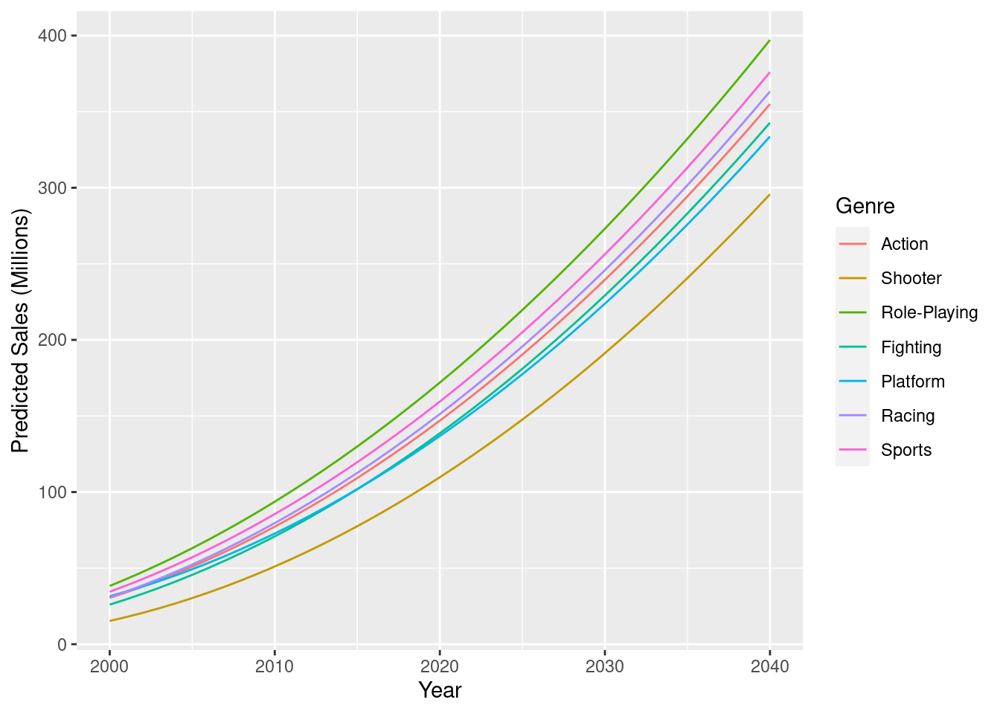
As expected, most of our genres are predicted to increase at basically the same rate, with Shooter games still selling more as the years go by, but just at a slower pace.
Hopefully though, this highlights the benefits and drawbacks with using models to predict the future. Here we’ve created a model that can give us testable predictions that we can incorporate into our thoughts and decision-making. The model though, is overly simple, and we’re missing some important but complex variables. For example, how has the rise of video game streaming platforms like Twitch and YouTube Gaming changed video game sales in recent years? And how will this continue to evolve> Modelling effects such as these can be difficult, so it’s best to start off small, create a simple model, then look to improve.
14.8 Questions
- What’s the difference between
y ~ x*wandy ~ x:w?